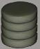
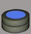
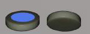
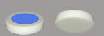
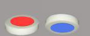

|
Four Mutes, which are blank on both
sides. Mutes can move in any direction, but cannot capture or pin enemy
pieces. Mutes are worth 1 point in prisoner exchanges.
|
|

|
Two Blues, which are blue on both
sides. Blues move diagonally like chess bishops. Blues are
worth 4 points in prisoner exchanges.
|

|

|
Two Reds, which are red on both
sides. Reds move horizontally and vertically like chess
rooks. Reds are worth 5 points in prisoner exchanges.
|

|

|
One Blue Mask which is blue on one side
and blank on the other side. Blue masks move like blues when
their blue face is on top, or like mutes when their blank face is on
top. Blue masks are worth 8 points in
prisoner exchanges.
|

|

|
One Red Mask which is red on one side
and blank on the other. Red masks move like reds when their red
face is on top, or like mutes when their blank face is on top. Red
masks are worth 10 points in prisoner
exchanges.
|

|

|
One Twister which is Orange on one side
and
blank on the other. Twisters move in an 'L' shape like
chess knights when their orange face is on top, or like mutes when
their blank face is on top. When the orange face is on top, they
can drop of , pin and pick up along the way, and always end their move
at a knight's move from the origin. Twisters are worth 15 points
in prisoner
exchanges.
|

|

|
One Ace, which is red on one face and
blue on the other. The ace moves as appropriate to the top
face. Aces are worth 21 points in prisoner exchanges.
|

|